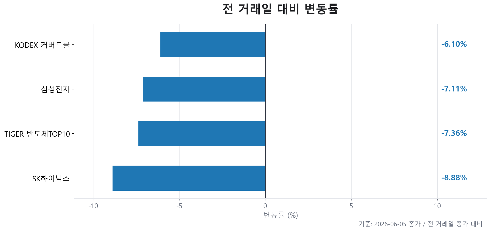
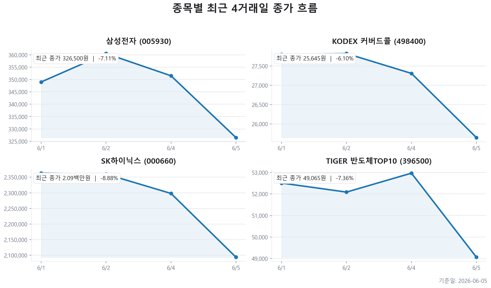
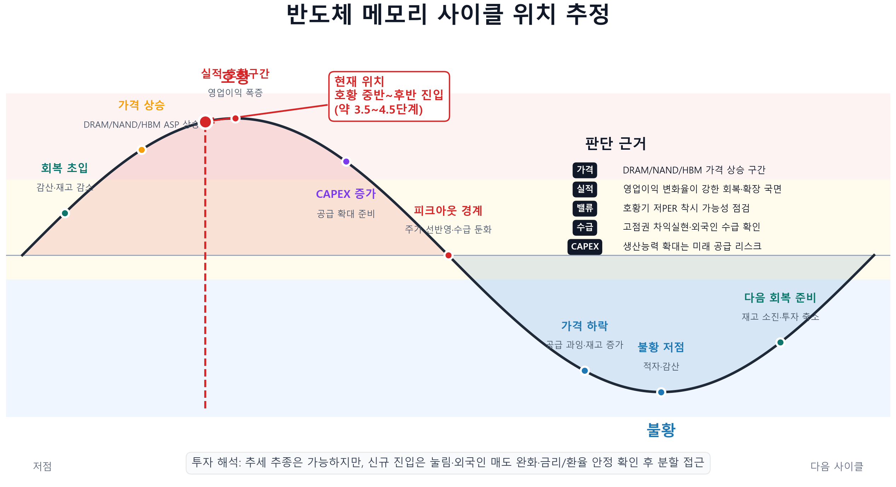

TIGER 반도체TOP10
오늘자 뉴스 0건
| 종목 | 티커 | 기준 가격 | 전 거래일 종가 | 등락 | 변동률 |
|---|---|---|---|---|---|
| TIGER 반도체TOP10 | 396500 | 49,065원 | 52,965원 | -3,900원 | -7.36% |
| KODEX 200타겟위클리커버드콜 | 498400 | 25,645원 | 27,310원 | -1,665원 | -6.10% |
| 삼성전자 | 005930 | 326,500원 | 351,500원 | -25,000원 | -7.11% |
| SK하이닉스 | 000660 | 2,094,000원 | 2,298,000원 | -204,000원 | -8.88% |



현재 메모리 사이클은 공급 부족 - 가격 상승 - 실적 폭증 - 주가 상승 구간에 있으며, 동시에 CAPEX 확대와 밸류에이션 피크아웃 리스크가 같이 켜진 중후반부 진입 국면입니다.
투자 결론은 “추세 추종은 유효하지만, 신규 진입은 가격 눌림·외국인 매도 완화·금리 안정 확인 후 분할 접근”입니다.
| 지표 | 현재 관찰값 | 사이클 해석 | 투자 함의 |
|---|---|---|---|
| 수요·공급 | DRAM/NAND/HBM 가격 상승 및 AI 서버 수요 중심 | 공급 부족과 가격 상승 구간 | 메모리 업체 실적 모멘텀은 유효 |
| 영업이익 방향 | 실적 변화율이 강한 회복·확장 국면 | 절대 이익보다 변화율이 중요한 구간 | 실적 상향은 주가 하방 지지, 피크아웃 감시 필요 |
| PER의 역설 | 삼성전자 forward PER 6.24배, SK하이닉스 6.01배 | 호황기 저PER은 싸 보이는 착시일 수 있음 | PER 단독 저평가 판단은 위험 |
| PBR 위치 | 삼성전자 PBR 조회 제한, SK하이닉스 조회 제한 | 저점권보다 모멘텀 프리미엄 구간 여부 확인 | PBR보다 이익·수급 검증이 중요 |
| CAPEX | HBM·AI 메모리 공급 확대 경쟁 | 공급 부족이 설비투자 증가 단계로 이동 | 단기 호재, 중장기 공급 과잉 리스크 |
| 기업 | 현재 강점 | 약점·리스크 | 시장 평가 | 주가 탄력성 판단 |
|---|---|---|---|---|
| 삼성전자 | 메모리·파운드리·패키징 턴키 포트폴리오와 HBM 추격 모멘텀 | HBM 고객 승인·수율 확인 필요, 범용 제품 비중 존재 | 시가총액 약 2308조원, forward PER 6.24배 | 후발 모멘텀. HBM 확인 시 탄력 가능 |
| SK하이닉스 | HBM 선두 프리미엄, AI 메모리 순도 높음 | 선두주자 프리미엄과 CAPEX 부담, 단기 급등 피로 | 시가총액 약 1631조원, forward PER 6.01배 | 선두주자. 추가 상승은 HBM 가격 지속성과 외국인 수급이 좌우 |
| TIGER 반도체TOP10 | 개별 종목 리스크를 줄인 반도체 바스켓 노출 | 대형 반도체주 쏠림 영향이 큼 | -7.36% | 섹터 베타 투자에 적합 |
| KODEX 200타겟위클리커버드콜 | 옵션 프리미엄·분배형 목적 가능 | 강한 추세장에서 초과수익 제한 가능 | -6.10% | 방어·현금흐름형 포지션 |
| 요인 | 현재 데이터 | 반도체주 영향 | 해석 |
|---|---|---|---|
| FOMO·급등 피로 | KOSPI 8801.49, 전일 대비 0.15% | 추격 매수 리스크 상승 | 사이클은 좋지만 주가 선반영 점검 필요 |
| 환율 | 원/달러 1537.38원, 전일 대비 0.48% | 수출주 이익에는 우호적이나 외국인 자금 이탈 우려 | 수급·금융시장 불안 변수 |
| 미국 10년물 금리 | 4.48% | 성장주 밸류에이션 할인율 상승 | AI 기대와 금리 부담이 공존 |
| 유가·인플레이션 | WTI 92.92달러, 전일 대비 -3.23% | 물가·금리 경계로 기술주 투자심리 압박 | 외부 충격 변수 |
| 정책 리스크 | AI 초과이익 과세·규제성 발언 확인 필요 | AI 수혜주 프리미엄 할인 가능 | 실적 변수보다 심리 변수로 관리 |
| 구분 | 체크 질문 | 매수·보유 쪽 신호 | 비중 축소 쪽 신호 |
|---|---|---|---|
| 저점 판단 | 실적 변화율이 개선되고 있는가? | 영업이익 상향, 적자 축소, 가격 상승 지속 | 이익 추정치 하향 전환 |
| 고점 판단 | 저PER이 이익 피크 착시인가? | 가격 상승률이 아직 이익 추정 상향보다 빠르지 않음 | PER은 낮지만 메모리 가격·주문 증가율 둔화 |
| 수급 | 외국인 매도가 멈추는가? | 외국인 순매수 전환 또는 매도 강도 완화 | 대형주 외국인 매도 지속 |
| HBM 순도 | HBM 물량·가격·고객사가 확인되는가? | 장기계약, 샘플 승인, 수율 개선 | 로드맵 발표만 있고 매출 반영 지연 |
| 매크로 | 환율·금리·유가가 안정되는가? | 10년물 금리 하락, 원화 안정, 유가 진정 | 금리 상승, 원/달러 급등, 유가 상승 |
오늘자 뉴스 0건
오늘자 뉴스 0건
이 파일은 자동 생성 결과입니다. 투자 판단 전 원문 뉴스와 실시간 호가를 다시 확인하세요.